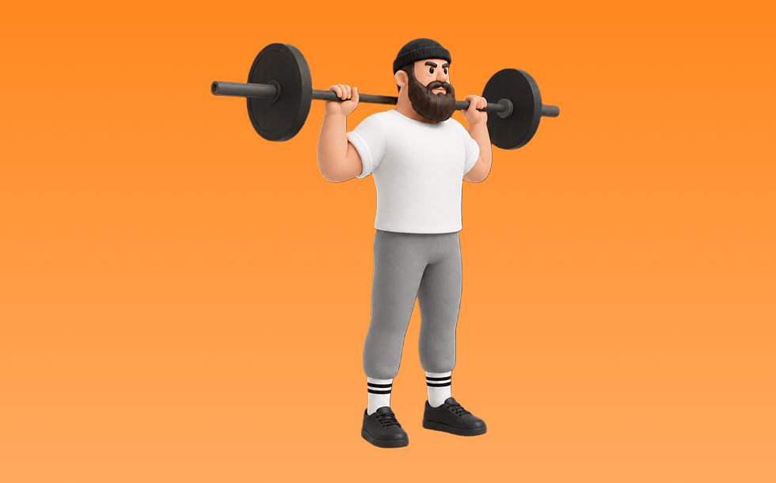

バーベルバックプレス

バーベルバックプレスとは、バーベルを首の後ろ側から頭上へ「押す」動作で肩（三角筋）と腕（上腕三頭筋）を鍛える種目です。肩の可動性と安定性が求められるのが特徴で、体幹を固めてバーを真上へ押し上げ、コントロールして下ろす動作を繰り返します。肩の筋力向上とプレス種目の強化が期待できます。
- 対象部位
- 肩
- 器具
- バーベル
- 記録形式
- 重量・回数
- 別名
- ビハインドネックプレス / barbell back press / behind neck press / behind-the-neck press
YouTube動画
-
【筋トレ悪いフォーム解説】バックプレスで肩を痛めずに鍛えるやり方を伝授！
-
【バックプレス】肩の前側に効くコツ〜スミスマシン版まで！後部には効かない！
-
「バックプレス」のウォームアップからメインセットまでを解説
-
【筋トレ】フロントプレスとバックプレスの違いと使い分け方 | ボディビルチャンピオンが解説【ビーレジェンド プロテイン】
-
【源紀流肩トレ】バックプレスをやれば確実にメロン肩になれる！【筋トレ】
-
メリットだらけ！バックプレス出来るとなぜ良いの？？？
-
【バックプレス】肩の構造から考える「インピンジメントの原因」と避けるべき理由
-
肩トレ！バックプレス【トレーニング日記】
-
【バックプレス】肩をケガする ”危ない理由” を解説【ショルダープレス】
-
【トレ動画】バックプレス【トーク動画？】
-
ようやく掴んだ新感覚で臨むバックプレスでリアデルト（三角筋後部）に迫力を出す方法とは
-
肩を鍛えるオーバーヘッドプレスのやり方【筋トレ】
-
【バーベルショルダープレス】確実に肩に効くコツをフロント・バック別に解説！
YouTubeショート
-
バックプレス（Back Press）のやり方と基本フォーム
-
トレーナーが1分解説「バーベルバックプレス」の正しいやり方とコツ【三角筋/バーベル】
-
【バーベルを使ったバックプレスの正しいやり方】逞しい肩をバーベルで作り上げる。｜Training Movie 100｜Tarzan
-
ベンチプレスを伸ばすショルダープレスのやり方！フォーム解説！
-
【オーバーヘッドプレス】怪我なく肩を鍛える正しいフォーム解説
-
肩の補助種目はミリタリープレス一択！！
-
マシンを使ったショルダープレスのコツ
-
初心者必見‼︎背中トレの極意（ベントオーバーローイング編） #筋トレあるある #筋トレ初心者 #背中トレ #ベントオーバーローイング#パーソナルジム#トレーナー採用
-
ベンチプレスの正しいやり方を紹介 #筋トレ #フィットネス
-
〔筋トレ〕バックプレス#筋トレ #ダイエット #減量 #ボディビル #クラシック
-
【MUSTER】バーベルバックプレス
-
初心者にありがちなミス スミスマシン ショルダープレス🏋️♀️
-
ベントオーバーロウの正しいやり方〜3つのポイント〜 #筋トレ #フィットネス
-
トレーナーが1分解説「バーベルバックプレス」の正しいやり方とコツ【三角筋/バーベル】#Shorts
-
ダイエット順調。肩トレバックプレスでパンプ。 #アンチドーピング #ナチュラルトレーニー
-
背中が成長しないラットプルダウン
-
正しいラットプルダウン4つのポイント【筋トレ】
-
デッドリフトの正しいやり方 #フィットネス #筋トレ #デッドリフト
-
【肩トレ】スミスマシンショルダープレスのやり方解説
-
正しいサイドレイズ4つのポイント #筋トレ
-
スクワットの準備方法 #初心者 #ジム #スクワット
-
サイドレイズはここを気をつけると全然肩が変わる！ #サイドレイズ #筋トレ #トレーニング
-
みなさんはダンベルショルダープレスやってますか？持田選手とこんがりさんが三角筋に効くトレーニングをレクチャーしてくれました！#筋トレ #volix #肩トレ #ちょこっと惜しい #三角筋
-
時間がない時の肩トレはコレだ！ #筋トレ
-
今日の肩トレ！#筋トレ大学生 #筋トレ男子 #gymmotivation #fitnessmotivation
-
【ダンベル】腕トレ４選 #筋肉
-
正しいダンベルロウ4つのポイント #筋トレ
-
腕が成長しないダンベルキックバック #筋トレ
-
初心者向け🔰チェストプレスのワンポイントアドバイス！ #筋トレ
-
先生!肩をデカくするおすすめの筋トレメニューは？ ＃Shorts #肩トレ
-
胸が成長しないダンベルプレス #筋トレ
-
スミスマシンバックプレス（Smith Machine Back Press）のやり方とフォーム
動作方法
- 安定した姿勢を作り、肩と体幹を固定する
- 狙う部位を意識して、反動を使わずに押す
- 可動域を保ちながら、ゆっくり元に戻す
動作ポイント
- 肩をすくめない
- 手首を寝かせすぎない
- 反動を使いすぎない
ワンポイントアドバイス
- 重量よりも肩の軌道を安定させる
- 首まわりの力みを減らして行う
目的別回数設定
目的や体力に応じた一般的な目安です。無理のない範囲で調整してください。
- 筋力アップ
- 1〜5回
- 筋肥大
- 6〜12回
- 持久力アップ
- 13〜20回
YouTube動画について
動画はYouTubeの公開情報をもとに表示しています。内容は投稿者によるもので、Biggrによる監修ではありません。
アプリを入手
筋トレやトレーニングの記録はBiggrにお任せください。今すぐ無料で使い始められます。